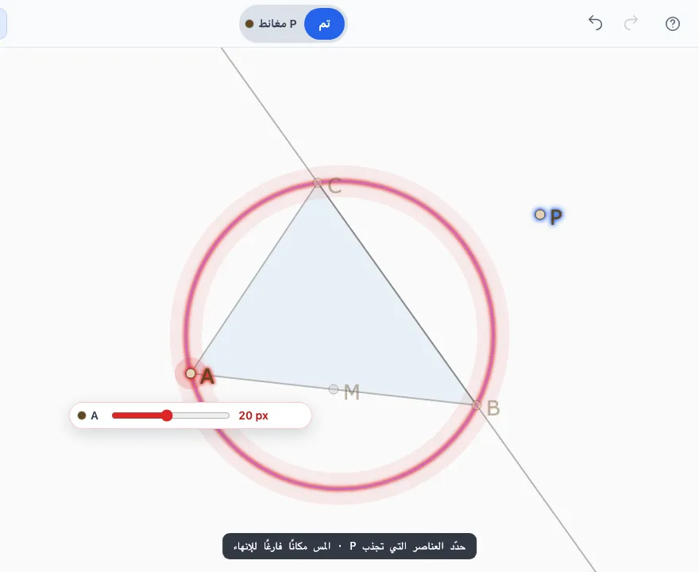

المغانط والدبوس والنابض
المغانط
تلتصق النقطة الحرة الممغنطة بالعناصر المختارة عند سحبها قربها، دون أن ترتبط بها.

- حدّد النقطة الحرة، ثم مغانط. يصبح باقي الشكل تحت غشاء.
- المس كل عنصر جاذب (نقطة، مستقيم، دائرة، قطع مخروطي، منحنى، قائمة): يصبح أحمر، بجذب ابتدائي قدره 20 px. وتُستثنى النقطة والعناصر التابعة لها.
- اضبط جذب المغناطيس المختار بمنزلقة بطاقته: لا شيء (يزيل المغناطيس)، من 1 إلى 1000 px، في كل مكان. وتُرسم منطقة جذب كل مغناطيس بأحمر فاتح.
- أنهِ بلمسة في مكان فارغ أو تم أو Esc.
يمكن سحب النقطة أثناء الضبط للتجربة. وكل ضبط خطوة تراجع.
الدبوس
تثبيت على الشاشة (نقطة حرة): تحتفظ النقطة بمكانها في النافذة، لا بإحداثياتها، عند تكبير العرض أو تحريكه، وكذلك عند تدوير المَعلم في العرض ثلاثي الأبعاد. وتبقى قابلة للتحريك. والضغطة الثانية تزيل التثبيت. وتوجد خانة الاختيار نفسها في قسم النقطة من لوحة الخصائص.
النابض
تحريك (نقطة على مستقيم، أو قطعة مستقيمة، أو شعاع، أو دائرة، أو قوس، أو مضلع، أو قطع مخروطي، أو محل هندسي، أو منزلقة) يُخرج تحت النقطة، أو تحت مقبض المنزلقة، نابضًا ينتهي بكرة.
- سحب الكرة ثم إفلاتها يطلق العنصر؛ وأثناء السحب، يُظهر شبح النقطة أو المقبض الحركة مسبقًا.
- الطول: السرعة، بدرجات معروضة (px/ث على مستقيم أو مضلع أو قطع مخروطي؛ °/ث على دائرة؛ % على محل هندسي أو منزلقة).
- الجهة: الاتجاه؛ ينطلق العنصر عكس اتجاه السحب: المنزلقة المسحوبة نحو اليسار (نحو الأسفل إن كانت عمودية) تزداد قيمتها.
- بالعرض بالنسبة إلى مستقيم أو منزلقة (أكثر من 45°): ذهاب وإياب. وفي غير ذلك، يدور العنصر.
- تحت الدرجة الأولى: توقف.
على عنصر متحرك أصلًا، يخرج النابض مشدودًا بالسرعة الحالية. والضغطة الثانية على تطوي النابض. السرعة الدقيقة والاتجاه المعاكس والتوقف عند الطرف: قسم التحريك في الخصائص.